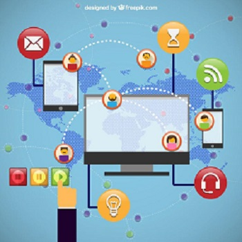

A comunicação digital é a troca de informações e mensagens por meio de canais totalmente digitais (sites, redes sociais) ou digitalmente transformados (mídia externa, como digital signage)
1-Relacionamento:Sabe-se que o relacionamento com o cliente é um dos fatores para o sucesso.Por esse motivo, as marcas devem estar onde os seus clientes estão, criando um grupo mais forte com seus clientes.
2-Engajamento:O engajamento é o próximo passo: colocar um pouco de emoção nessa relação que começou na etapa anterior. O objetivo é fidelizar o cliente, torná-lo um promotor e defensor da marca. É assim que o marketing assume a posição principal. Investir em estratégias de comunicação digital de engajamento normalmente incluem o inbound marketing e também campanhas inovadoras em mídias externas, como em outdoors digitais que chamam a atenção.
3-Conteúdo:Seguindo as etapas, a comunicação digital não seria nada sem o conteúdo. Muita gente confunde e pensa que trata-se apenas dos textos de um blog ou da newsletter disparada toda semana.Toda comunicação digital da sua empresa gera um conteúdo. Elas também cumprem uma importante função de criar um elo de relacionamento e instigar o engajamento, como as estratégias online.
4-Presença: E por fim temos, a presença. Ou seja, a capacidade da empresa de estar nos lugares certos e na hora certa. Na comunicação digital, normalmente considera-se que presença é estar no maior número de redes sociais possíveis, o que não acaba sendo verdade. A presença na comunicação digital é marcar seu espaço nas mídias e canais que impactam verdadeiramente o seu consumidor.